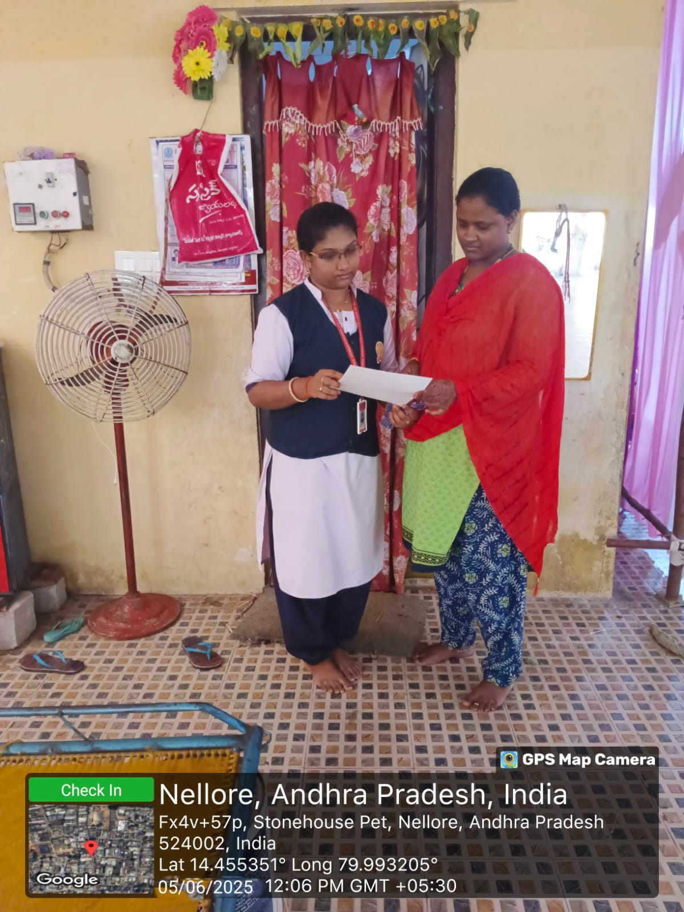

Objective of the Activity Done
To understand the causes of child labor and educate children about the importance of schooling.
Detailed Report
DAY 1
Gathered information about children in the area and explained the importance of education.
DAY 2
Raised questions about child labor and interacted with children to understand their awareness.
DAY 3
- Discussed the causes of child labor:
- Lack of access to quality education.
- Poor access to decent work.
DAY 4
Discussed the solutions of child labor through dialogue with children and families, encouraging school enrollment and providing admission assistance.
DAY 5
- Discussed types of child labor:
- Child labor in agriculture
- Child labor in armed conflict
- Trafficking in children
- Mining and quarrying
- Child labor in domestic work
DAY 6
- Discussed effects of child labor:
- Illiteracy
- Lost childhood
- Mental health issues
